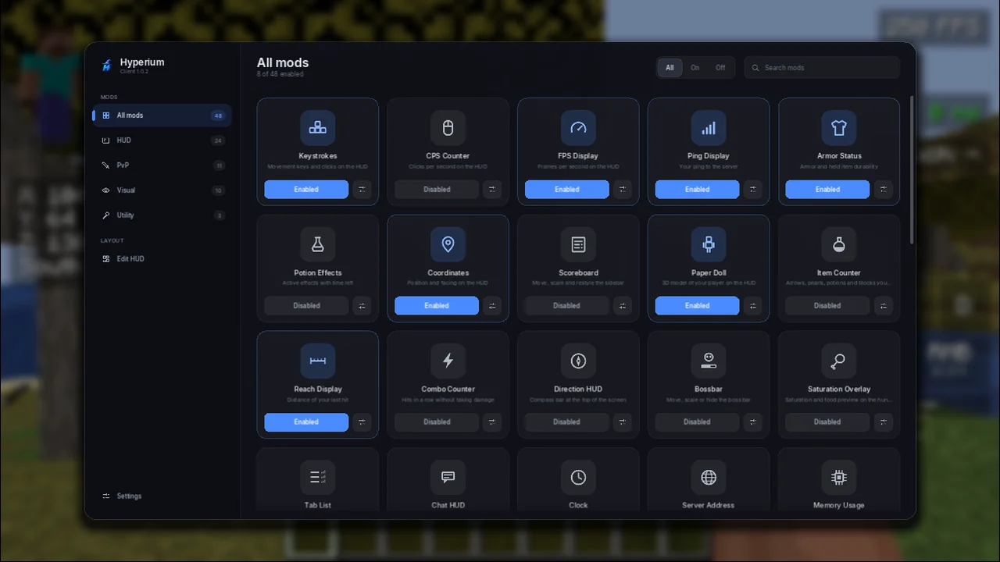
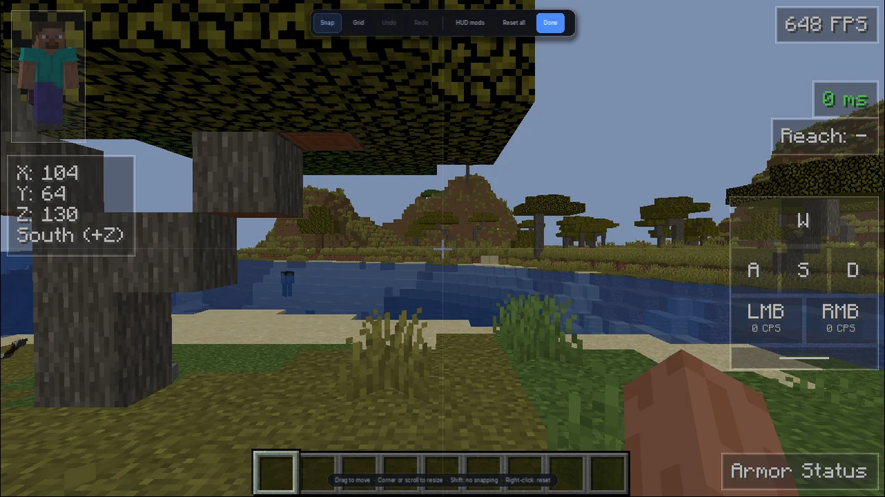

Tudo o que você usa no PvP, num lugar só
Sem baixar mod por mod, sem configurar Forge. O Hyperium já vem com o que os melhores clients oferecem.
Feito para PvP
Animações da 1.7, Hit Color, Hitboxes, Reach Display, Combo Counter, Toggle Sprint e correção do atraso do mouse.
HUD do seu jeito
Keystrokes, CPS, FPS, Armor Status, Minimap e muito mais. Arraste, redimensione e alinhe tudo no editor de HUD.
Mais FPS
OptiFine integrado e um mod de desempenho que corta o que você não vê, limita o FPS em segundo plano e acelera a troca de mundos.
Visual moderno
Texturas novas do Minecraft trazidas para o 1.8.9, camadas de skin em 3D, Item Physics e um painel de mods no estilo dos grandes clients.
Jogue com amigos
Veja quem usa o Hyperium pelo ícone ao lado do nome, troque mensagens entre jogadores e mostre seu servidor no Discord.
Sempre atualizado
No Windows o launcher se atualiza sozinho, e em todos os sistemas ele baixa o Java certo para você. Sem instalar nada além do Hyperium.
Liga, desliga e ajusta em segundos
Aperte Right Shift dentro do jogo e tenha todos os mods em cartões, com busca, categorias e opções de cada um.
- Padrões prontos, iguais aos dos clients mais usados
- Perfis diferentes para cada servidor
- Tecla do painel e tamanho da interface configuráveis

Cada elemento exatamente onde você quer
Arraste os elementos pela tela com ímã e guias de alinhamento, mude o tamanho pelo canto e desfaça com Ctrl+Z.
- Alinhamento automático entre elementos e bordas
- Grade opcional e movimento fino pelas setas
- Clique duplo abre as opções do mod

Mais de 80 mods, de graça
Baixe para o seu sistema
Escolha o instalador do seu sistema. No Windows, as versões novas chegam sozinhas.
Windows
Windows 10 e 11 · 64 bitsmacOS
macOS 12 ou mais novoNão sabe qual? Abra o menu da Apple > Sobre este Mac. Chip Apple M… é Apple Silicon; Processador Intel é Intel.
Linux
Ubuntu, Debian e outras · 64 bitsPerguntas frequentes
O Windows mostrou “O Windows protegeu o computador”. E agora?
Esse aviso aparece com programas novos que ainda não têm assinatura digital paga. Clique em Mais informações e depois em Executar assim mesmo. O aviso só aparece na instalação.
No Mac aparece que o app não pode ser aberto.
Na primeira vez, clique com o botão direito no Hyperium Launcher, escolha Abrir e confirme. Nas próximas vezes ele abre normalmente.
Preciso instalar o Java ou o Forge?
Não. O launcher baixa o Java e o Minecraft 1.8.9 sozinho na primeira vez que você clica em Jogar. O OptiFine já vem integrado.
Como entro na minha conta?
Entre com a sua conta Microsoft, a mesma do Minecraft original. O launcher lembra das contas em que você já entrou para você trocar entre elas com um clique.
Posso usar em qualquer servidor?
Sim, em qualquer servidor que aceite o 1.8.9. Os mods do Hyperium são visuais e de qualidade de vida, do mesmo tipo dos clients de PvP conhecidos. Mesmo assim, confira as regras do servidor em que você joga.
Como abro o painel de mods?
Dentro do jogo, aperte Right Shift. A tecla pode ser trocada nas configurações do próprio painel.